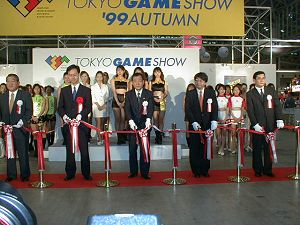
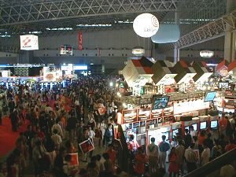
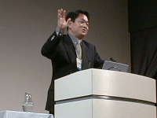
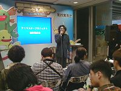
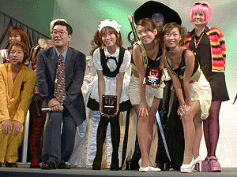

9月17日（金）、「東京ゲームショウ '99秋」が幕張メッセで開幕しました。本日17日は業界関係者に向けた「ビジネスデー」、18日、19日は「一般公開日」です。
今回のテーマ「スゴイは、ここから」とは、コンピュータエンタテインメントの新しい波を、この東京ゲームショウから世界に向けて発信していくという決意を込めたもの。全世界の注目が集まる、その中での開会です。
開会式では、まず社団法人コンピュータエンターテインメントソフトウェア協会・上月景正会長から、「西暦2000年を目前に、東京ゲームショウは新たなステージをめざし、『われわれが世界にトレンドを発信する』という自負を持って、これからも斬新なソフトを送り出していく
」と、開会の挨拶。
そして通商産業省 機械情報産業局情報処理振興課・原山保人課長の来賓祝辞に続いて、CESA北上一三 東京ゲームショウ実行委員長の開会宣言と、テープカットが行われました。

西暦2000年に向かい、新たなステージが開かれる
今回の出展社は74社、総出展小間数は1486小間。出展ソフトウェア数はおよそ450タイトルにものぼると見込まれます。開会式でCESA上月会長が「今回の東京ゲームショウは、とりわけ充実した内容」と語ったように、めじろ押しの新ソフトと期待の新ハードウェアの前人気もあって、会場内はビジネスデーとしてはかつてない熱気に包まれました。

初日から会場はオーバーヒート
午後のイベントステージでは、株式会社ソニー・コンピュータエンタテインメント 久多良木健代表取締役社長による特別講演が行われました。
「次世代デジタル・エンタテインメント」 と題された講演の内容は、ゲーム産業の急速な発展とファン層の拡大を示しながら、音楽や映画をも含めたすべてのデジタル・エンタテインメントの発展の核として、自慢の新ハードをアピールするもの。「この大きな夢に、多くのファンとクリエータのご賛同・ご参加を願えれば」という結びの言葉が、来場者に大きな共感を呼びました。
またこの日、プレスブリーフィング・ルームでは、出展社の新作タイトルや、韓国・ゲーム総合支援センターによる韓国のゲームおよび業界の状況などが発表され、こちらも多くの報道陣を集めました。

未来への大きなビジョンを示した久多良木健社長
|

制作者みずから、熱く新タイトルをアピール
|
ビジネスデーのイベントステージ最後の催しは、毎回好評のコンパニオン・コスチュームコンテスト「ベストコスチューム in TOKYO GAME SHOW '99AUTUMN」。今回は14社の参加によって美の栄冠が競われました。結果は、優勝はカプコン、準優勝はコスパ。審査員特別賞にサン電子、ビクター インタラクティブ ソフトウェアが選ばれました。

右の2人組が優勝・カプコン、その左に準優勝・コスパ
「東京ゲームショウ」CESA主催イベントとして、これまで恒例だった「技術戦略説明会」にかわり、「CESAデベロッパーズカンファレンス東京1999」（略称：CEDEC TOKYO 1999）が9月16日（木）から本日まで幕張メッセ（日本コンベンションセンター）・国際会議場で開催されました。 そのもようの一部は、会場内のイベントステージで上映されました。
その他「教育機関のための第4回CESA人材育成シンポジウム」、「知的財産シンポジウム〜中古ゲームソフト問題から21世紀のデジタル文化を考える」のCESA主催イベントも併催されました。
あいにくの小雨の中に開幕した東京ゲームショウ'99秋でしたが、ふたをあけてみれば予想以上の熱気に包まれて、その第1日目を終了しました。この日の来場者数は21,434人でした。
18日（土）、19日（日）は一般公開です。皆様、ぜひ東京ゲームショウへお越しください。